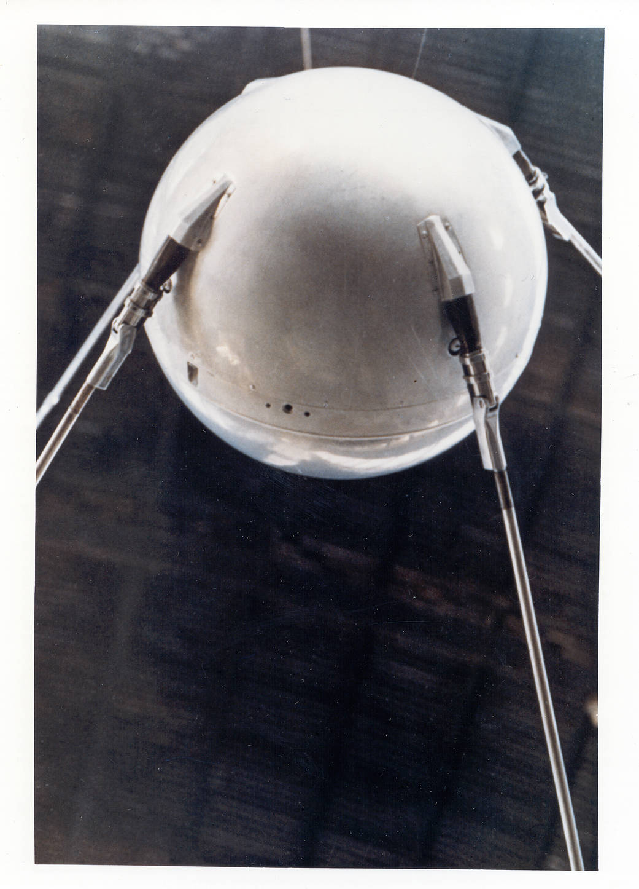
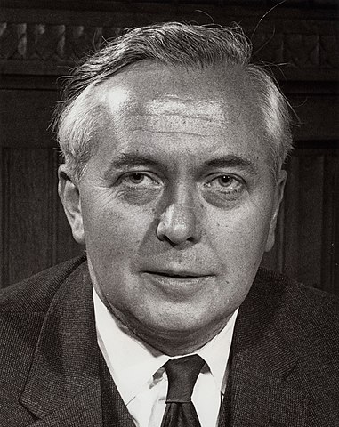
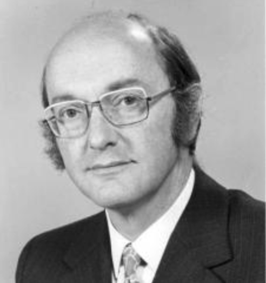
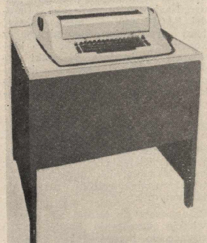
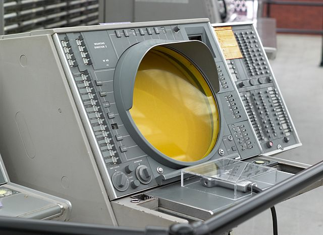

<!DOCTYPE html>
<html lang="en">
  <head>
    <meta charset="utf-8" />
    <meta name="viewport" content="width=device-width, initial-scale=1.0, maximum-scale=1.0, user-scalable=no" />

    <title></title>
    <link rel="stylesheet" href="dist/reveal.css" />
    <link rel="stylesheet" href="dist/theme/simple.css" id="theme" />
    <link rel="stylesheet" href="plugin/highlight/zenburn.css" />
	<link rel="stylesheet" href="css/layout.css" />
	<link rel="stylesheet" href="plugin/customcontrols/style.css">


    <script defer src="dist/fontawesome/all.min.js"></script>

	<script type="text/javascript">
		var forgetPop = true;
		function onPopState(event) {
			if(forgetPop){
				forgetPop = false;
			} else {
				parent.postMessage(event.target.location.href, "app://obsidian.md");
			}
        }
		window.onpopstate = onPopState;
		window.onmessage = event => {
			if(event.data == "reload"){
				window.document.location.reload();
			}
			forgetPop = true;
		}

		function fitElements(){
			const itemsToFit = document.getElementsByClassName('fitText');
			for (const item in itemsToFit) {
				if (Object.hasOwnProperty.call(itemsToFit, item)) {
					var element = itemsToFit[item];
					fitElement(element,1, 1000);
					element.classList.remove('fitText');
				}
			}
		}

		function fitElement(element, start, end){

			let size = (end + start) / 2;
			element.style.fontSize = `${size}px`;

			if(Math.abs(start - end) < 1){
				while(element.scrollHeight > element.offsetHeight){
					size--;
					element.style.fontSize = `${size}px`;
				}
				return;
			}

			if(element.scrollHeight > element.offsetHeight){
				fitElement(element, start, size);
			} else {
				fitElement(element, size, end);
			}		
		}


		document.onreadystatechange = () => {
			fitElements();
			if (document.readyState === 'complete') {
				if (window.location.href.indexOf("?export") != -1){
					parent.postMessage(event.target.location.href, "app://obsidian.md");
				}
				if (window.location.href.indexOf("print-pdf") != -1){
					let stateCheck = setInterval(() => {
						clearInterval(stateCheck);
						window.print();
					}, 250);
				}
			}
	};


        </script>
  </head>
  <body>
    <div class="reveal">
      <div class="slides"><section  data-markdown><script type="text/template"><!-- .slide: class="drop" -->
<div class="" style="position: absolute; left: 0px; top: 0px; height: 700px; width: 960px; min-height: 700px; display: flex; flex-direction: column; align-items: center; justify-content: center" absolute="true">

## Is it time for the internet yet? 

Competences
- existence of digital computers
- existence of telecommunication networks
- existence of information theory
- ideas around flow control, logic, algorithms
- demonstration of control of a calculator over a phone line in 1940
</div></script></section><section  data-markdown><script type="text/template"><!-- .slide: class="drop" -->
<div class="" style="position: absolute; left: 0px; top: 0px; height: 700px; width: 960px; min-height: 700px; display: flex; flex-direction: column; align-items: center; justify-content: center" absolute="true">


Remember, info theory allows us to separate meaning of a message from its 'information', the measure of its redundancy, hence, the amount of damage it can take and still be understood.

Without that insight, nothing else can work. It's what makes digital communications *work*.
</div></script></section><section  data-markdown><script type="text/template"><!-- .slide: class="drop" -->
<div class="" style="position: absolute; left: 0px; top: 0px; height: 700px; width: 960px; min-height: 700px; display: flex; flex-direction: column; align-items: center; justify-content: center" absolute="true">


<small>

> "When data of any sort are placed in storage, they are filed alphabetically or numerically, and information is found (when it is) by tracing it down from subclass to subclass. It can only be in one place... The human mind does not work that way. It operates by association. With one item in its grasp, it snaps instantly to the next that is suggested by the association of thoughts, in accordance with some intricate web of trails carried by the cells of the brain."

</small>

Sound familiar?
</div>

<aside class="notes"><p>Bush, memex
photo Bush with his differential analyzer</p>
</aside></script></section><section  data-markdown><script type="text/template"><!-- .slide: class="drop" -->
<div class="" style="position: absolute; left: 0px; top: 0px; height: 700px; width: 960px; min-height: 700px; display: flex; flex-direction: column; align-items: center; justify-content: center" absolute="true">


Timesharing
- technique for using the speed of the computer to present the appearance of multiple simultaneous users
- terminal - a keyboard/teletype/whatever for transmitting instructions, displaying results
</div>

<aside class="notes"><ul>
<li>emphasis on timesharing means that you can demonstrate your massive machine is being used to its fullest, most economical use</li>
<li>if you can timeshare, you also can prevent other folks from getting machines</li>
<li>if you can timeshare, you are in a bit of a position of power over people who need the machine</li>
<li>also means that you have to go find people and think up uses of your machine</li>
</ul>
</aside></script></section><section  data-markdown><script type="text/template"><!-- .slide: class="drop" -->
<div class="" style="position: absolute; left: 0px; top: 0px; height: 700px; width: 960px; min-height: 700px; display: flex; flex-direction: column; align-items: center; justify-content: center" absolute="true">

The humble modem


</div>

<aside class="notes"><p>modulates digital pulses into sounds, demoulates sounds into digital data. invented in 1949 for transmitting radar signals.  MODulation + DEModulation. Adapted for the SAGE system in 1953; commericalized by 1958 - so you can use a regular phone line for your timesharing that dedicated lines</p>
</aside></script></section><section  data-markdown><script type="text/template"><!-- .slide: class="drop" -->
<div class="" style="position: absolute; left: 0px; top: 0px; height: 700px; width: 960px; min-height: 700px; display: flex; flex-direction: column; align-items: center; justify-content: center" absolute="true">

But which computer to use?

How to effectively get your data into and out of that computer?

Discrete circuits? Or something else?
</div></script></section><section  data-markdown><script type="text/template"><!-- .slide: class="drop" -->
<div class="" style="position: absolute; left: 0px; top: 0px; height: 700px; width: 960px; min-height: 700px; display: flex; flex-direction: column; align-items: center; justify-content: center" absolute="true">


Packet Switching
- developed independently in US, and in UK, at the same time
- only one of these was framed in the context of surviving nuclear war
</div></script></section><section  data-markdown><script type="text/template"><!-- .slide: class="drop" -->
<div class="" style="position: absolute; left: 0px; top: 0px; height: 700px; width: 960px; min-height: 700px; display: flex; flex-direction: column; align-items: center; justify-content: center" absolute="true">




Sputnik 1957, Dr. Strangelove 1963
</div>

<aside class="notes"><p>U2 spy plane shot down over ussr in 1960; berlin wall goes up 1961; cuban missle crisis 1962. On the Beach (1957), Fail-Safe (1962)</p>
<p>a central plot point in fiction of this era is what happens when communications break down</p>
</aside></script></section><section  data-markdown><script type="text/template"><!-- .slide: class="drop" -->
<div class="" style="position: absolute; left: 0px; top: 0px; height: 700px; width: 960px; min-height: 700px; display: flex; flex-direction: column; align-items: center; justify-content: center" absolute="true">


US Political Context

- Paul Baran engineer at the [Rand](https://www.rand.org/) Corporation, begins thinking about secure communications
</div>

<aside class="notes"><p>RAND founded in 1946, for the airforce. a think tank. They all recognized that robust communications were necessary to survive (ha) a nuclear war/error. But how to achieve this was up in the air. This was the quesiton that engineer Paul Baran started exploring from 1959</p>
</aside></script></section><section  data-markdown><script type="text/template"><!-- .slide: class="drop" -->
<div class="" style="position: absolute; left: 0px; top: 0px; height: 700px; width: 960px; min-height: 700px; display: flex; flex-direction: column; align-items: center; justify-content: center" absolute="true">

Baran's original system was the simplest system:

`go/no go` 

via am radio to commanders in the field: nuke or no nuke.
</div>

<aside class="notes"><p>Military wants rather more than this; back to drawing board.</p>
</aside></script></section><section  data-markdown><script type="text/template"><!-- .slide: class="drop" -->
<div class="" style="position: absolute; left: 0px; top: 0px; height: 700px; width: 960px; min-height: 700px; display: flex; flex-direction: column; align-items: center; justify-content: center" absolute="true">


|Regular Communication | 'Distributed Communication'
|------------------------|------------------------------|
| hierarchy - call to local office <-> regional <-> national <-> regional and back | nodes and switches |
| destroy local/regional/national office, comms cut off | destroy node, still other paths|
</div>

<aside class="notes"><p>Baran proposed hundreds of nodes, connected by as many as 8 lines; terminals connected to two or three nodes directly, which connects up to 1024 users; nodes to be located far from population centres; multiplexers to put multiple signals onto single wire</p>
</aside></script></section><section  data-markdown><script type="text/template"><!-- .slide: class="drop" -->
<div class="" style="position: absolute; left: 0px; top: 0px; height: 700px; width: 960px; min-height: 700px; display: flex; flex-direction: column; align-items: center; justify-content: center" absolute="true">


Controlling data flow - "message switching"
</div>

<aside class="notes"><ul>
<li>&shy;<!-- .element: class="fragment" data-fragment-index="1" -->think &#39;post office&#39;: one integral message, label w/ origin and destination, passed from station to station</li>
<li>&shy;<!-- .element: class="fragment" data-fragment-index="2" -->each station (post office) holds on to it until it can be forwarded to the next node/destination</li>
<li>&shy;<!-- .element: class="fragment" data-fragment-index="3" -->telegraph system does this. At first manually, by 1960s, using computers to store/route messages</li>
<li>&shy;<!-- .element: class="fragment" data-fragment-index="4" -->these also lets you even out the flow - messages can be stored until there&#39;s space to move it (makes the line more profitable)</li>
<li>&shy;<!-- .element: class="fragment" data-fragment-index="5" -->Baran&#39;s system isn&#39;t hierarchical; key is that the switches can reroute as necessary</li>
</ul>
</aside></script></section><section  data-markdown><script type="text/template"><!-- .slide: class="drop" -->
<div class="" style="position: absolute; left: 0px; top: 0px; height: 700px; width: 960px; min-height: 700px; display: flex; flex-direction: column; align-items: center; justify-content: center" absolute="true">

This **isn't new**.

And telephone switches used information theory to figure out least congested routes to wire a circuit
</div>

<aside class="notes"><p>Variations already existed. Problem was in storing the messages, and working out the routing.</p>
<p>Existing systems worked on a &#39;broadcast&#39; analogy, every message goes to every destination.</p>
<p>Baran proposed <em>individual</em> message routing.</p>
<p>To make that work, needed high speed and low storage. Switch things fast enough, and the message would appear to move instantly.</p>
<p>broadcast analogy: I shout at you, you all shout at the next row of seats, they all shout at the next</p>
<p>the faster the switches work, the fewer complete messages they have to hold onto.</p>
</aside></script></section><section  data-markdown><script type="text/template"><!-- .slide: class="drop" -->
<div class="" style="position: absolute; left: 0px; top: 0px; height: 700px; width: 960px; min-height: 700px; display: flex; flex-direction: column; align-items: center; justify-content: center" absolute="true">


AUTOVON 

CONUS AUTOVON
</div>

<aside class="notes"><p>a distributed communications network, preceeding Baran&#39;s work! AT&amp;T and the Army; military voice network built on top of the existing civilian network. Went online with 10 nodes in 1964. Eventually extended around the world. Continues in service until the 1990s</p>
<p>AT&amp;T &#39;hardened&#39; exchanges, and connected things up in a grid, in contrast to hierarchical civilian lines. Distributed nodes, but those nodes centrally controlled, telephone switches. Like a traffic control system. Manually re-routing things as necessary. Baran&#39;s system control itself was distributed: the node was a computer making its own decision about where to send the message next.</p>
<p>Computerizing the switches and giving them the autonomy to decide where to route things: that&#39;s the big idea. nodes along the line can regenerate the signal; in the analogue approach, this would actual degrade the signal.</p>
<p>People trained in telephony scoffed at Baran.</p>
</aside></script></section><section  data-markdown><script type="text/template"><!-- .slide: class="drop" -->
<div class="" style="position: absolute; left: 0px; top: 0px; height: 700px; width: 960px; min-height: 700px; display: flex; flex-direction: column; align-items: center; justify-content: center" absolute="true">

~message switching~ 

'distributed adaptive messaging blockswitching!'


aka, packet switching
</div>

<aside class="notes"><ul>
<li>represent the message in bits of a certain size, 1024 bits</li>
<li>add a header indicating the destination, and the id of the next packet in the message</li>
<li>each &#39;multiplexer&#39; (eg router) adds its own information to the message indicating where the packet has been</li>
<li>routers use the destination, route information to figure out the next leg of the journey</li>
<li>destination multiplexer strips out the header, reassembles the blocks as they come in</li>
</ul>
<p>if everything is digital, then the message could be text, it could be audio, it could be data. But crucially, it is being represented as <em>bits</em>. </p>
<p>Air Force begins to promote Baran&#39;s idea</p>
<p>Defense Communications Agency says: ok, we&#39;ll build it</p>
<p>Baran &amp; Air Force say - um, no, you don&#39;t have the chops; proposal withdrawn</p>
<p>Baran&#39;s work does get disseminated, but no immediate impact</p>
</aside></script></section><section  data-markdown><script type="text/template"><!-- .slide: class="drop" -->
<div class="" style="position: absolute; left: 0px; top: 0px; height: 700px; width: 960px; min-height: 700px; display: flex; flex-direction: column; align-items: center; justify-content: center" absolute="true">

<split even>




</split>
UK Political Context

- Harold Wilson's fears of losing out on tech
- Donald Davis, National Physical Laboratory
</div>

<aside class="notes"><ul>
<li>forces mergers and centralization</li>
<li>various task forces/projects set up</li>
<li>computing to be developed with an eye to larger economic policy</li>
<li>Donald Davis invents package switching at National Physical Laboratory</li>
<li>Davis joined NPL, worked on the computer that Turing designed there, the ACE.</li>
<li>his interest was in interactive computing - batch processing made effective use of computational time, but was slow &amp; tedious for users</li>
<li>&#39;interactive&#39; here means time-sharing. a computer is idle waiting for the user. So if you have numerous users, its time becomes occupied, but the illusion is that the machine is only serving the one person.</li>
<li>manufacturers like this, and businesses emerge to offer commercial time on a machine, direct modem &amp; phone line, hourly rate.</li>
</ul>
</aside></script></section><section  data-markdown><script type="text/template"><!-- .slide: class="drop" -->
<div class="" style="position: absolute; left: 0px; top: 0px; height: 700px; width: 960px; min-height: 700px; display: flex; flex-direction: column; align-items: center; justify-content: center" absolute="true">

<split even>



</split>
IBM 2741, ca 1965 

- a direct connection in adjacent rooms at first
- then local phone lines
- but long distance rates interfere
- high cost of communication makes users work fast, which undermines purpose of timesharing
</div>

<aside class="notes"><ul>
<li>Davis knows how telegraphs use message switching</li>
<li>says, &#39;hey, what if the messages were broken up into smaller packets, and then the computers also figured out how to switch them to and from the time sharing computers&#39; - packet switching!</li>
<li>for Davis, packet switching maximizes scare resource; for Baran, it was about secure comms.</li>
<li>computers and their interfaces and the best way to interact with them are all still rapidly developing <em>things</em> at this point by the way.</li>
</ul>
</aside></script></section><section  data-markdown><script type="text/template"><!-- .slide: class="drop" -->
<div class="" style="position: absolute; left: 0px; top: 0px; height: 700px; width: 960px; min-height: 700px; display: flex; flex-direction: column; align-items: center; justify-content: center" absolute="true">

- Davis unveils packet switching in 1966 at a conference.
- learns from a British military officer afterwards that it's already been invented by Baran
- Baran uses words like 'survivable', 'kill', 'salvos', 'target'
- Davis reads Baran's work, says, y'know, we don't need this in a civilian context
</div>

<aside class="notes"><p>Davis tries to make his system easy to use, suitable for simple jobs, to try to hide the complexity of what was going on. He wanted to bring down the cost of data communications.</p>
<ul>
<li>he also saw that it would help achieve fairness in access, in contrast to regular message switching - in MS, each message has to be sent in entirety before next can start. But packet switchiing using multiplexing, using whatever avaiable slot size in the channel to switch in a packet.</li>
<li>he sees packet switching as not the last comms standing (Baran) but one of a number of competing kinds of systems. Proposes that post office builds a system in 1965. He imagines it could be used to give businesses computer access for remote data processing, point-of-sale transactions, database queries, remote control of machines, online gambling!!!!</li>
<li>it would need a high speed telephonic backbone down the UK, dynamic routers, nodes making independent decisions.</li>
</ul>
</aside></script></section><section  data-markdown><script type="text/template"><!-- .slide: class="drop" -->
<div class="" style="position: absolute; left: 0px; top: 0px; height: 700px; width: 960px; min-height: 700px; display: flex; flex-direction: column; align-items: center; justify-content: center" absolute="true">


Post Office Says No
</div>

<aside class="notes"><ul>
<li>Davis builds a smaller system, just around NPL&#39;s facilities - the Mark I - 1967</li>
<li>Is used regularly by scientists in the NPL; 1973 introduces the Mark II - lasts until 1986</li>
<li>Government interference, demand for immediate economic spin-offs hampers Davis</li>
<li>Government &#39;rationalization&#39; of computer industry - manufacturers of key components forced into mergers, production stoppages</li>
<li>and of course, driving women programmers out of the field in an effort to make programming safe for upper class men to explore</li>
<li>Post Office also a blockage; didn&#39;t begin to experiment in this way til late 1970s; <strong>and used american technology instead</strong></li>
</ul>
</aside></script></section><section  data-markdown><script type="text/template"><!-- .slide: class="drop" -->
<div class="" style="position: absolute; left: 0px; top: 0px; height: 700px; width: 960px; min-height: 700px; display: flex; flex-direction: column; align-items: center; justify-content: center" absolute="true">

Meanwhile, back in the US

- ARPA - Advanced Research Projects Agency - *oh shit Sputnik!* - created 1957
- AT&T greet Baran's ideas with hostility; Defence Communication Agency populated with telephone people, so Baran's ideas dead in the water
</div>

<aside class="notes"><ul>
<li>ARPA gets out of space stuff almost immediately, leaving the field to NASA. Never underestimate interagency politics. ARPA sticks to earth military research.</li>
<li>Gets its hands on some computers</li>
<li>Joseph Licklider, director of computing projects, shifts emphasis in mid 60s to graphics, wargames, programming languages and time sharing. Big problem - every machine has its own language, etc. How do you ensure some kind of standards?</li>
<li>he doesn&#39;t believe there&#39;ll ever really <em>be</em> a situation where the <em>computers</em> need to talk to one another, but just in case of Armageddon, let&#39;s research that anyway. He figures it&#39;ll be more one person needs to talk to several different computers at once, shifting data between them</li>
</ul>
</aside></script></section><section  data-markdown><script type="text/template"><!-- .slide: class="drop" -->
<div class="" style="position: absolute; left: 0px; top: 0px; height: 700px; width: 960px; min-height: 700px; display: flex; flex-direction: column; align-items: center; justify-content: center" absolute="true">

<split even>





</split>

_yes, a very tiny picture indeed; Licklider worked on the SAGE computer in the 1950s_
</div>

<aside class="notes"><p>SAGE semi automatic ground environment, air-defense system, Licklider studied how humans operated it, which led to his interest in information theory. SAGE consoles come with itegrated ashtray. connected via dedicate lines to other sites. one in North Bay, unit is at Sci Tech</p>
<p>first head of IPTO was Joseph Licklider (who wrote a 1960 paper on blue-sky thoughts of what might happen if machines talk to each other, which proposed the novel idea that computers should be adapted to serving the interests of humans, rather than humans having to adapt to serve the interests of the machines, &#39;Macn-Computer Symbiosis&#39;)</p>
</aside></script></section><section  data-markdown><script type="text/template"><!-- .slide: class="drop" -->
<div class="" style="position: absolute; left: 0px; top: 0px; height: 700px; width: 960px; min-height: 700px; display: flex; flex-direction: column; align-items: center; justify-content: center" absolute="true">

Lyndon Johnson, in 1965 - directed agencies to support basic university research, and that centers of excellence should be created throughout the university

Lawrence Roberts - manager, ARPANET project, 1966
</div>

<aside class="notes"><p>&#39;Information Processing Techniques Office&#39; (IPTO; created in 1962)
IPTO creates computing research centers - MIT, Carnegie MELLON, UCLA, others.</p>
<p>1965 - ARPA commissions a study on cooperative network timesharing (direct link a computer at MIT with one in Santa Monica, dedicated phone line, no packet switching)</p>
<ul>
<li>the idea is to link these IPTO-funded centres together</li>
</ul>
<p>Lawrence Roberts becomes manager of this new ARPANET project. 1966</p>
<p>Calls the first design discussions in 1967 at Ann Arbor for what will be called ARPANET</p>
<ul>
<li>his mandate was to build a large multi-computer network, but no idea how to do this.</li>
</ul>
</aside></script></section><section  data-markdown><script type="text/template"><!-- .slide: class="drop" -->
<div class="" style="position: absolute; left: 0px; top: 0px; height: 700px; width: 960px; min-height: 700px; display: flex; flex-direction: column; align-items: center; justify-content: center" absolute="true">

Early computer science centres 

||||
|-----------|----------|---------|
|UCLA- time sharing | RAND - graphics | SDC - time sharing|
|SRI- time shraing | Stanford - AI | Berkely - timesharing|
|Illinois - supercomputing| CMD - AI| BBN- time shraing|
|MIT - AI, graphics, timesharing|Harvard - graphics| |
</div>

<aside class="notes"><p>a researcher or contractor using computing power might have specialized needs - they might need interactive times sharing, number crunching, graphical displays, specialized inputs. everyone always wants a new bespoke computer. IPTO figures, if they can effectively wire ALL of these places together, then a person could sit at a terminal, and get whatever they need from the <em>existing</em> EXTREMELY EXPENSIVE equipment. The arpanet is born from a desire to stop building big-ass computers.</p>
</aside></script></section><section  data-markdown><script type="text/template"><!-- .slide: class="drop" -->
<div class="" style="position: absolute; left: 0px; top: 0px; height: 700px; width: 960px; min-height: 700px; display: flex; flex-direction: column; align-items: center; justify-content: center" absolute="true">

ARPA calls a meeting in 1967 of computer scientists with an interest in computerized communications 

- that is, IPTO called the meeting
</div>

<aside class="notes"><ul>
<li>by which time Davis&#39; system at NPL is up and working and demonstrates feasibility of packet switching</li>
<li>and they realize that the problem of machines with different languages talking to one another could only be solved by having <em>translators</em><ul>
<li>ie, mini computers to act as bridges/translators/interfaces</li>
<li>they come up with an idea to network just the mini computers, which would share language/protocols</li>
<li>and each mainframe team would only need to figure out how to address their own mini</li>
<li>these called the IMPs (Interface Message Processors) and the technique packet switching</li>
<li>decide that it will need to shift a whole bunch of data at once, thus decide 56 kilobits / second would be good</li>
</ul>
</li>
</ul>
<p>people didn&#39;t want <em>other</em> people using <em>their</em> computers. But introducing the IMPs makes it seem ok, since it also means that you get access to MOAR POWER</p>
<ul>
<li>IPTO only NOW comes across Baran&#39;s original paper from 1960</li>
<li>Baran now gets involved</li>
</ul>
<p>So, two different supervening necessities foster the <em>idea</em> of package switching. And</p>
</aside></script></section><section  data-markdown><script type="text/template"><!-- .slide: class="drop" -->
<div class="" style="position: absolute; left: 0px; top: 0px; height: 700px; width: 960px; min-height: 700px; display: flex; flex-direction: column; align-items: center; justify-content: center" absolute="true">

First RFQ for the ARPANET  - August 1968
</div></script></section><section  data-markdown><script type="text/template"><!-- .slide: class="drop" -->
<div class="" style="position: absolute; left: 0px; top: 0px; height: 700px; width: 960px; min-height: 700px; display: flex; flex-direction: column; align-items: center; justify-content: center" absolute="true">


[3420 Boetler Hall](https://uclaconnectionlab.org/internet-museum/)

- First four IMPs, $360 000 each
- Programming to make them work: $640 000
- IBM says, *imps, shmimps*. IPTO buys from Honeywell instead (a DDP-516).
- *in rugged design suitable for battle-field use!*
</div>

<aside class="notes"><p>military always in the background: that&#39;s how these crazy sums of money are available.</p>
</aside></script></section><section  data-markdown><script type="text/template"><!-- .slide: class="drop" -->
<div class="" style="position: absolute; left: 0px; top: 0px; height: 700px; width: 960px; min-height: 700px; display: flex; flex-direction: column; align-items: center; justify-content: center" absolute="true">

Who will build these IMPs?

- coming from Honeywell, yes, but extensive customization needed
- Boston company: Bolt, Beranek and Newman gets the contract
	- Licklider *just happened* to have worked for them in the 1950s.
- How do you make this thing, a 'router'? How do you actually make 'packet switching' work?
</div>

<aside class="notes"><p>Pentagon just happens to be there are the first meeting with BBN.</p>
</aside></script></section><section  data-markdown><script type="text/template"><!-- .slide: class="drop" -->
<div class="" style="position: absolute; left: 0px; top: 0px; height: 700px; width: 960px; min-height: 700px; display: flex; flex-direction: column; align-items: center; justify-content: center" absolute="true">

The thing that gets designed ultimately is a fusion of Baran and Davis' designs and concerns

- fewer of the 'hardened' cold-war survivability features
- more of the high-speed transmission, adaptive routing
</div>

<aside class="notes"><p>And also that &#39;computers&#39; are starting to be seen as instruments of policy and power</p>
<p>US invested in more &#39;pure&#39; research, while UK sought immediate economic benefits</p>
<p>so everything that the UK did had to demonstrate immediate impact. A distraction. which is why ARPANET quickly became more sophisticated than the Mark 1 at NPL, even though it still only existed largely on paper</p>
</aside></script></section><section  data-markdown><script type="text/template"><!-- .slide: class="drop" -->
<div class="" style="position: absolute; left: 0px; top: 0px; height: 700px; width: 960px; min-height: 700px; display: flex; flex-direction: column; align-items: center; justify-content: center" absolute="true">


Not just the Internet. The same structure gives us.... the [Mother of All Demos](https://invention.si.edu/mother-all-demos)

- SRI, December 1968
	- Douglas Englebart demonstrations the 'NLS', the oNLine-System
</div>

<aside class="notes"><ul>
<li>Englebart strongly influenced by &#39;as we may think.&#39; Showed off windows, hypertext, graphics, navigation, command input, video conferencing, computer mouse, word processing, file linking, revision control, collaborative-realtime editor</li>
</ul>
<p>-hugely influential for subsequent developments</p>
<ul>
<li>Roberts sees ARPANET as way to bring researchers together, &#39;cooperative computing&#39; for the common good</li>
<li>everyone working for him sees this as a chance to advance pure research in a brand new field</li>
<li>telephone people just think the whole project is doomed to failure (see also: Defense Communications Agency)</li>
<li>computer science people think the task of reordering &amp; reassembling packets will prove to be too computationally intensive to be worthwhile, or that other packets would get lost forever  (these problems did emerge, but did not prove to be insurmountable)</li>
</ul>
</aside></script></section><section  data-markdown><script type="text/template"><!-- .slide: class="drop" -->
<div class="" style="position: absolute; left: 0px; top: 0px; height: 700px; width: 960px; min-height: 700px; display: flex; flex-direction: column; align-items: center; justify-content: center" absolute="true">

Watch on your own time

<iframe width="560" height="315" src="https://www.youtube.com/embed/B6rKUf9DWRI" title="YouTube video player" frameborder="0" allow="accelerometer; autoplay; clipboard-write; encrypted-media; gyroscope; picture-in-picture; web-share" allowfullscreen></iframe>
</div></script></section><section  data-markdown><script type="text/template"><!-- .slide: class="drop" -->
<div class="" style="position: absolute; left: 0px; top: 0px; height: 700px; width: 960px; min-height: 700px; display: flex; flex-direction: column; align-items: center; justify-content: center" absolute="true">

Anyway...

- By focusing on IMPs and how to automatically read the network for congestion and figure out the best route, BBN & IPTO & ARPA sidestep the local mainframe people
- local mainframe people only have to figure out how to make the first link to IMP; not every centre with a mainframe was on board with this project.
</div></script></section><section  data-markdown><script type="text/template"><!-- .slide: class="drop" -->
<div class="" style="position: absolute; left: 0px; top: 0px; height: 700px; width: 960px; min-height: 700px; display: flex; flex-direction: column; align-items: center; justify-content: center" absolute="true">

- by 1968-9 things are happening fast
	- BBN working on the honeywells, routing algoritms, protocols for IMPs
	- main frame teams form themselves into a 'Network Marking Group' to figure out their end
		- Standford Research Institute comes up with the LOGIN command
	- ideas like skipping IMPs and going computer-to-computer, treating each other as a terminal of the other... lots of ideas are kicked around
	- different groups form around the different problems
</div></script></section><section  data-markdown><script type="text/template"><!-- .slide: class="drop" -->
<div class="" style="position: absolute; left: 0px; top: 0px; height: 700px; width: 960px; min-height: 700px; display: flex; flex-direction: column; align-items: center; justify-content: center" absolute="true">


</div>

<aside class="notes"><ul>
<li>it&#39;s decided that the first &#39;host&#39; - UCLA - would handle measuring and monitoring the network<ul>
<li>hooked up September 2 1969</li>
</ul>
</li>
<li>the second host - SRI - would be the Network Information Center<ul>
<li>hooked up 1 October</li>
</ul>
</li>
</ul>
</aside></script></section><section  data-markdown><script type="text/template"><!-- .slide: class="drop" -->
<div class="" style="position: absolute; left: 0px; top: 0px; height: 700px; width: 960px; min-height: 700px; display: flex; flex-direction: column; align-items: center; justify-content: center" absolute="true">

October 29, 1969: The 'birth' of the Internet


</div>

<aside class="notes"><ul>
<li>Leonard Kleinrock directing things at UCLA, figuring out a lot of the math behind packet switching</li>
<li>Charley Kline, student, at UCLA tries to login to SIR. System crashes at &#39;G&#39; of LOGIN</li>
</ul>
</aside></script></section><section  data-markdown><script type="text/template"><!-- .slide: class="drop" -->
<div class="" style="position: absolute; left: 0px; top: 0px; height: 700px; width: 960px; min-height: 700px; display: flex; flex-direction: column; align-items: center; justify-content: center" absolute="true">


3420 Boelter Hall in the 1960s. Who are these people? What else is going on here?
</div></script></section><section  data-markdown><script type="text/template"><!-- .slide: class="drop" -->
<div class="" style="position: absolute; left: 0px; top: 0px; height: 700px; width: 960px; min-height: 700px; display: flex; flex-direction: column; align-items: center; justify-content: center" absolute="true">

<iframe width="560" height="315" src="https://www.youtube.com/embed/7duyl0ZZ5BQ" title="YouTube video player" frameborder="0" allow="accelerometer; autoplay; clipboard-write; encrypted-media; gyroscope; picture-in-picture; web-share" allowfullscreen></iframe>
</div></script></section><section  data-markdown><script type="text/template"><!-- .slide: class="drop" -->
<div class="" style="position: absolute; left: 0px; top: 0px; height: 700px; width: 960px; min-height: 700px; display: flex; flex-direction: column; align-items: center; justify-content: center" absolute="true">

Next day - I haven't decided yet - but maybe more about that 'mother of all demos', hypertext, and some other crucial 60s stuff.

We'll take a look at the 'Network Information Centre' at SRI

And possibly also AlohaNet
</div></script></section></div>
    </div>

    <script src="dist/reveal.js"></script>

    <script src="plugin/markdown/markdown.js"></script>
    <script src="plugin/highlight/highlight.js"></script>
    <script src="plugin/zoom/zoom.js"></script>
    <script src="plugin/notes/notes.js"></script>
    <script src="plugin/math/math.js"></script>
	<script src="plugin/mermaid/mermaid.js"></script>
	<script src="plugin/chart/chart.min.js"></script>
	<script src="plugin/chart/plugin.js"></script>
	<script src="plugin/customcontrols/plugin.js"></script>

    <script>
      function extend() {
        var target = {};
        for (var i = 0; i < arguments.length; i++) {
          var source = arguments[i];
          for (var key in source) {
            if (source.hasOwnProperty(key)) {
              target[key] = source[key];
            }
          }
        }
        return target;
      }

	  function isLight(color) {
		let hex = color.replace('#', '');

		// convert #fff => #ffffff
		if(hex.length == 3){
			hex = `${hex[0]}${hex[0]}${hex[1]}${hex[1]}${hex[2]}${hex[2]}`;
		}

		const c_r = parseInt(hex.substr(0, 2), 16);
		const c_g = parseInt(hex.substr(2, 2), 16);
		const c_b = parseInt(hex.substr(4, 2), 16);
		const brightness = ((c_r * 299) + (c_g * 587) + (c_b * 114)) / 1000;
		return brightness > 155;
	}

	var bgColor = getComputedStyle(document.documentElement).getPropertyValue('--r-background-color').trim();
	var isLight = isLight(bgColor);

	if(isLight){
		document.body.classList.add('has-light-background');
	} else {
		document.body.classList.add('has-dark-background');
	}

      // default options to init reveal.js
      var defaultOptions = {
        controls: true,
        progress: true,
        history: true,
        center: true,
        transition: 'default', // none/fade/slide/convex/concave/zoom
        plugins: [
          RevealMarkdown,
          RevealHighlight,
          RevealZoom,
          RevealNotes,
          RevealMath.MathJax3,
		  RevealMermaid,
		  RevealChart,
		  RevealCustomControls,
        ],


    	allottedTime: 120 * 1000,

		mathjax3: {
			mathjax: 'plugin/math/mathjax/tex-mml-chtml.js',
		},
		markdown: {
		  gfm: true,
		  mangle: true,
		  pedantic: false,
		  smartLists: false,
		  smartypants: false,
		},

		mermaid: {
			theme: isLight ? 'default' : 'dark',
		},

		customcontrols: {
			controls: [
			]
		},
      };

      // options from URL query string
      var queryOptions = Reveal().getQueryHash() || {};

      var options = extend(defaultOptions, {"width":960,"height":700,"margin":0.04,"controls":true,"progress":true,"slideNumber":false,"transition":"fade","transitionSpeed":"default"}, queryOptions);
    </script>

    <script>
      Reveal.initialize(options);
    </script>
  </body>

  <!-- created with Advanced Slides -->
</html>
